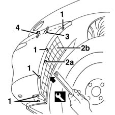
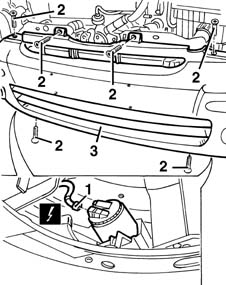
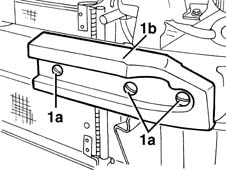
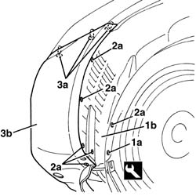
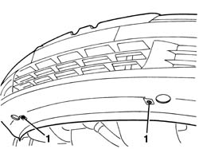
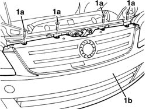

7055B10 LH OR RH REFLECTOR(ONE) ON REAR BUMPERS - R R
- Path
- Procedures > 70 FITTINGS > 7055 MOULDINGS ON PROTECTIONS > 7055B EXTERIOR PROTECTIONS > 7055B10 LH OR RH REFLECTOR(ONE) ON REAR BUMPERS - R R
- Kind
- repair procedure (removal / refitting; the operation number is the code)
- Applies to
- all engines; all production periods
- Interactive page
- https://sloeber94.github.io/elrnDB-fMltpl/en/#/2892263
Applies to: all engines; production: fino a 05/99, da 09/03, da 06/99 a 03/02, da 04/02 a 08/03, fino a 05/04
 Removing
Removing
 Refitting
RefittingOp. 5550C30 L/H OR R/H FRONT TURN SIGNAL (ONE) - R+R
(right and left)
1. Working from both sides of the car, undo the bolts securing the end of the front bumper.
2. Remove the retaining button (2a) and additional wheelarch (2b) from the front bumper, using the special tool in the areas of the removed bolts.
 | Name | Country |
|---|---|---|
2 | Scraper blade | 1.878.077.000 |
3. Working from the bottom, undo the bottom bolt securing the wing to the bumper.
4. Working from the front direction indicator compartment, undo the top bolt securing the wing to the bumper.

Applies to: all engines; production: fino a 05/99, da 09/03, da 06/99 a 03/02, da 04/02 a 08/03, fino a 05/04
1. Disconnect the electrical connections (2a, 2b) of the front fog lamps.
 | Name | Connector |
|---|---|---|
1 | Left fog lamp |
| Name | Connector |
|---|---|---|
1 | Right fog lamp |
2. Undo the bumper's central bolts.
3. With the aid of a second operator, recover the bumper.

Applies to: all engines; production: fino a 05/99, da 09/03, da 06/99 a 03/02, da 04/02 a 08/03, fino a 05/04
1. If necessary, undo the bolts (1a) and remove the buffers (1b).

Applies to: all engines; production: fino a 05/99, da 09/03, da 06/99 a 03/02, da 04/02 a 08/03, fino a 05/04
Refitting
RemovingCheck that the bumper is undamaged.
If removed, fit the buffers and secure with the bolts.
Fit the bumper.
Tighten the bumper's central bolts.
Connect the electrical connections of the front fog lamps.
From both sides of the bumper, working from the front direction indicator compartment, tighten the top bolt securing the wing to the bumper.
Working from the bottom, tighten the bottom bolts securing the wing to the bumper.
Fit the additional wheelarch on the bumper.
Fit the retaining button.
Tighten the bolts securing the end of the front bumper.
Op. 5550C30 L/H OR R/H FRONT TURN SIGNAL (ONE) - R+R
(right and left)
Check that the parts are working.
Applies to: all engines; production: da 06/04
Removing
Refitting- Position the vehicle on a lift.
- Raise the vehicle.
1. Working on both sides of the vehicle, release button retaining the wheel arch liner (1b) using the special tool.
1878077000 | Knife | 7055B10 | - |
2. Working on both sides of the vehicle, undo the bolts (2a) and move the wheel arch liner (1b) slightly.
3. Undo the side bolts (3a) fixing the front bumper (3b).

Applies to: all engines; production: da 06/04
- Undo the lower bolts fixing the bumper.

Applies to: all engines; production: da 06/04
- Lower the vehicle.
- Undo upper fixing bolts (1a) and remove the bumper (1b).

Applies to: all engines; production: da 06/04
- If necessary
- Op. 7055A43 CENTRAL FRONT GRILLE - R R
Applies to: all engines; production: da 06/04
Refitting
Removing- Check that the bumper is not damaged.
- If removed
- Op. 7055A43 CENTRAL FRONT GRILLE - R R
- Position the bumper and tighten the upper bolts.
- Tighten the lower and side bolts.
- Tighten the bolts via the wheel arches.
- Position the wheel arches and secure them using the bolts and the retaining buttons.
Topics linked from this page (4)
- 5550C30 l/h or r/h front turn signal (one) - r+r
- 7055A43 CENTRAL FRONT GRILLE - R R
- F15 Left fog lamp
- F16 Right fog lamp